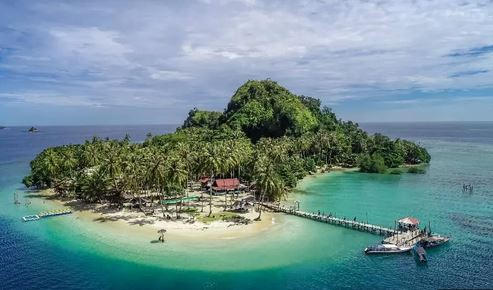

Pulau Pagang
Pulau Pagang adalah destinasi wisata bahari yang terletak di Kecamatan Bungus Teluk Kabung, Sumatera Barat, sekitar 30–45 menit perjalanan laut dari Pelabuhan Bungus atau Sungai Pisang setelah menempuh perjalanan darat sekitar 40 km dari Kota Padang. Pulau ini menawarkan keindahan alam berupa pantai berpasir putih, air laut yang jernih, serta terumbu karang yang memukau, menjadikannya tempat ideal untuk snorkeling, berenang, memancing, hingga menyelam bersama ikan hias dan penyu. Pulau Pagang juga memiliki bukit kecil setinggi sekitar 37 meter yang cocok untuk trekking ringan sambil menikmati panorama laut dari ketinggian. Fasilitas wisata cukup lengkap, mulai dari kafe, toilet, musholla, area camping, hingga penginapan cottage sederhana. Keindahan alam dan suasana tenang menjadikan Pulau Pagang sebagai pilihan populer untuk liburan santai maupun wisata alam yang menenangkan di pesisir Sumatera Barat.
Kembali